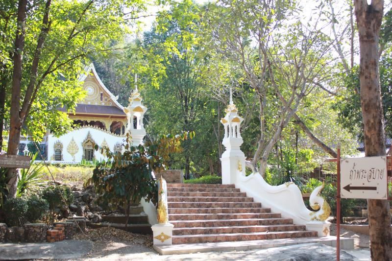

วัดถ้ำพระสบาย

โดยปากทางเข้าถ้ำและภายในถ้ำมีแสงส่าง มีระบบไฟฟ้า สามารถปิด - เปิดด้านล่างและในถ้ำได้ และบนยอดเขาวัดถ้ำพระสบาย พระเจดีย์นั้นสร้างตั้งแต่สมัยท่านปู่แว่นและท่านพ่อลี ได้พิจารณาเห็นว่าสถานที่แห่งนี้มีลำแสงปรกฏพุ่งขึ้นสูง ไฟแสงสว่างในวันข้างขึ้นข้างแรม ๘ ค่ำ และข้างเจดีย์นั้นมีช้างหมอบ ซึ่งปรับปรุงจัดลานไม้ประดับ มีสระน้ำที่เกิดขึ้นจากธรรมชาติโดยมีปลา และบูรณะปรับปรุงเพื่อให้ญาติโยมได้สักการบูชา ภายในบริเวณวัดถ้ำพระสบายนั้นอากาศดีมาก และร่มรื่นน่าเข้าไปเที่ยวเยี่ยมชมและมีประเพณีวันสำคัญ ทุกวันที่ ๒๐ เมษายน ของทุกปี จะมีการรดน้ำพระเจดีย์และสรงน้ำพระพุทธรูป
Back